2025
Fearless: United in Mission
Summary to be written.
Greater New York Conference · Youth Ministries
Eight directors, more than twenty annual themes, and generations of Pathfinders, Adventurers and young adults sent into the city. The narrative for this page is the Director’s to write; the record below comes from the current site.
Leadership through the years
Eight directors have led the department since 1979.
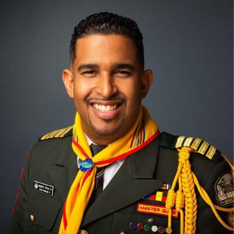
Dr. Andres Peralta2012–2016A theme for every year
Each year the department rallies the conference around one call. The artwork and summaries come from the current site; years without a summary are for the Director to complete.
2025
Summary to be written.
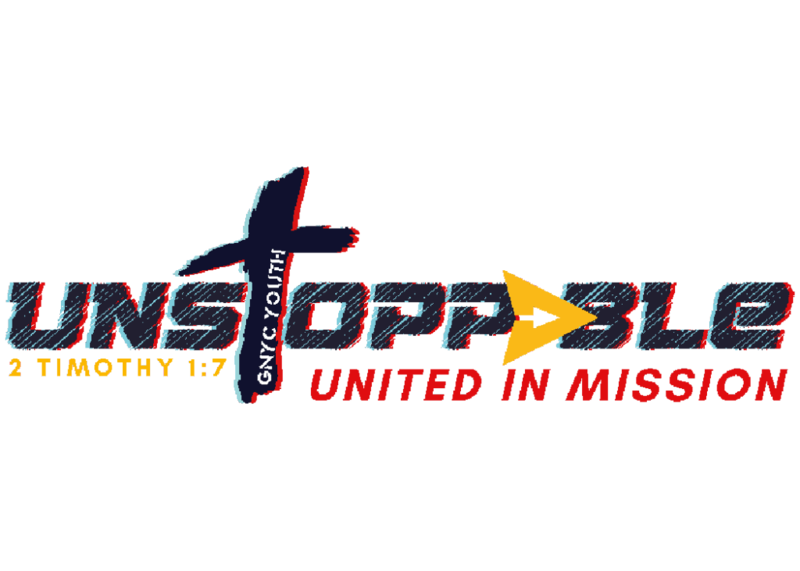
2024
Summary to be written.
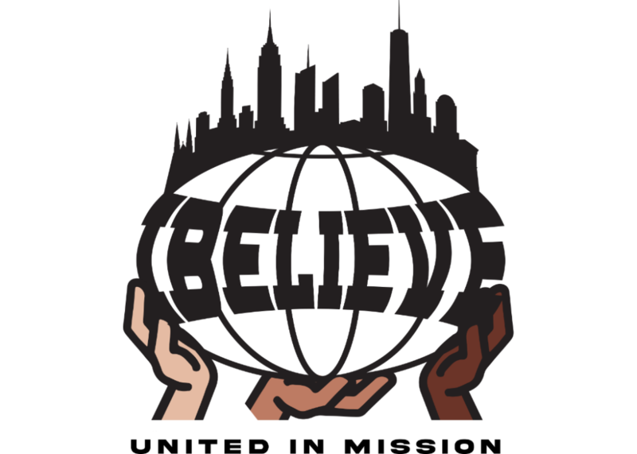
2023
Summary to be written.
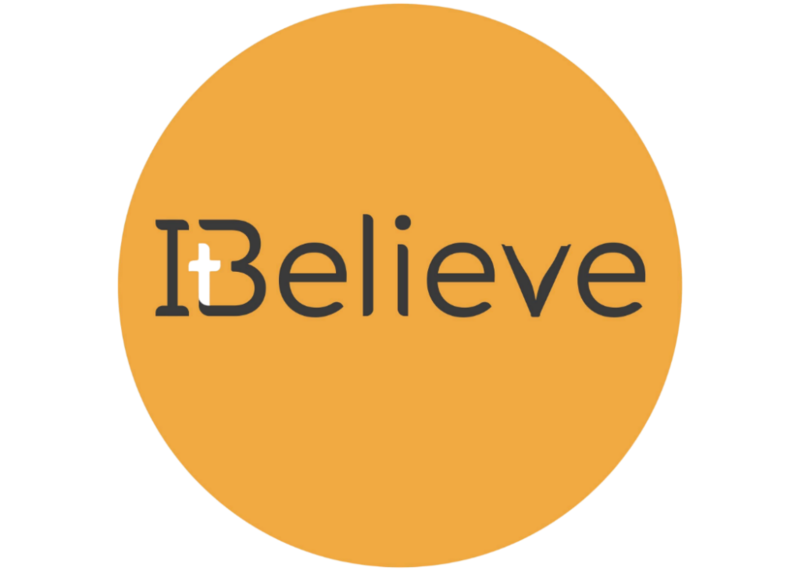
2022
Summary to be written.
2021
Summary to be written.
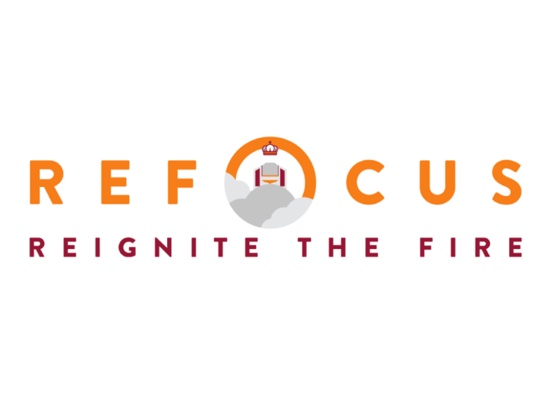
2020
Summary to be written.
2019
Summary to be written.
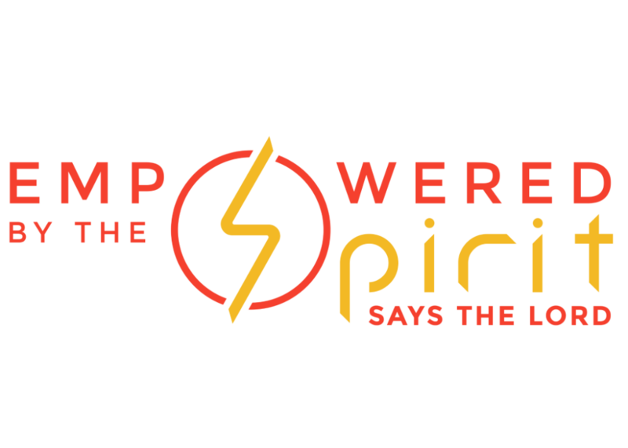
2017–2018
Summary to be written.
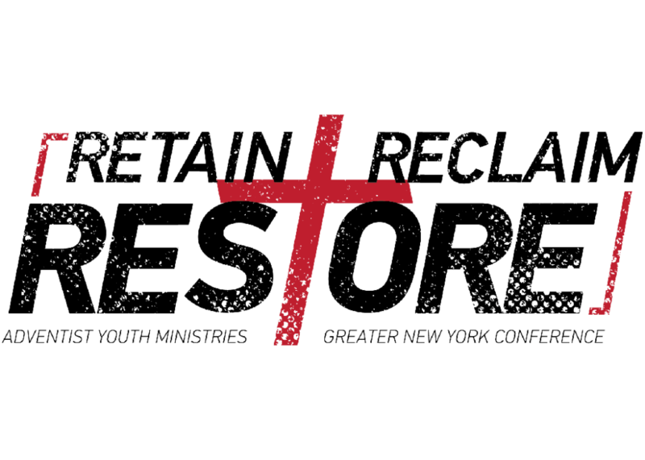
2016
The youth were stirred to take action to retain those in the church, reclaim lost youth, and restore them to service for the Lord.
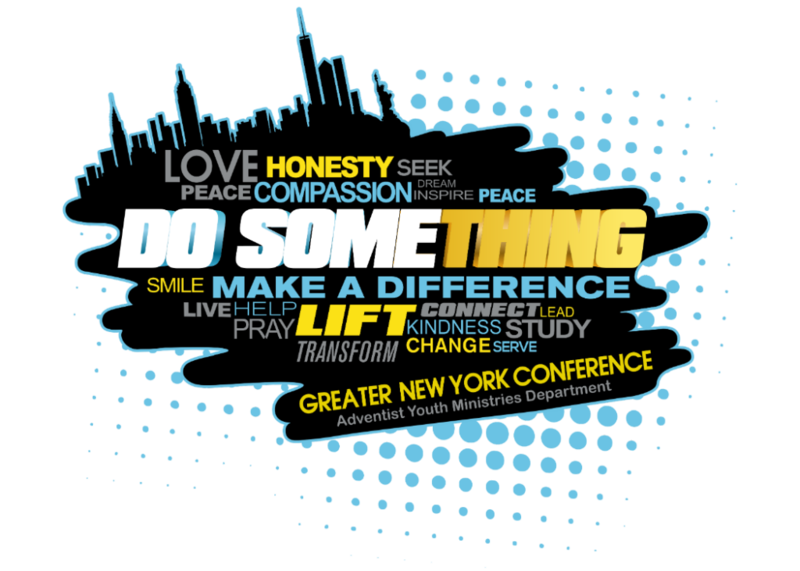
2015
Summary to be written.
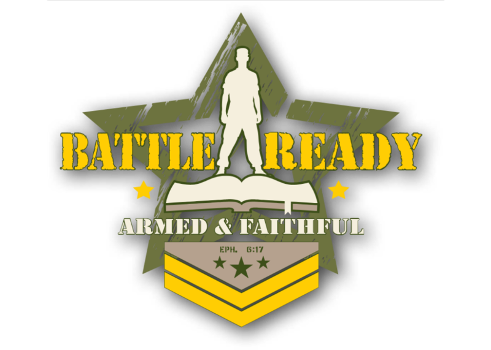
2014
The youth were directed to put on the armor of God through prayer and Bible study to be ready for spiritual warfare.
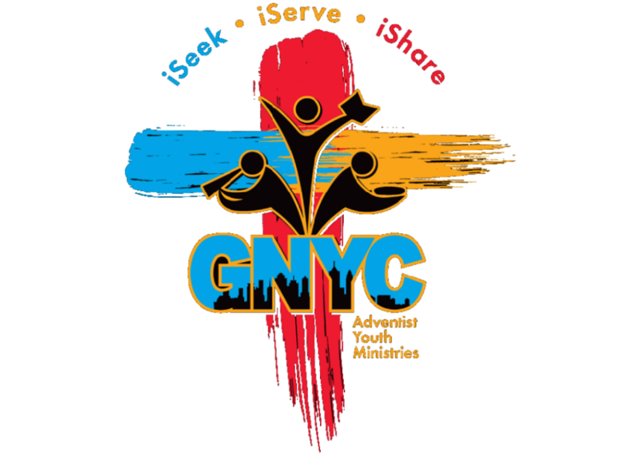
2013
The youth were challenged to seek a deeper relationship with Christ, get involved in service, and share their knowledge of God.
2012
The youth were encouraged to develop closer relationships with Christ and their communities through service.
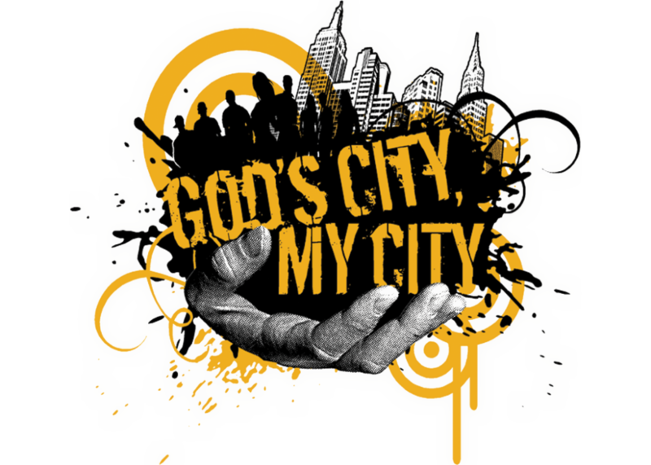
2011
The youth were encouraged to make evangelism a driving force in their cities.
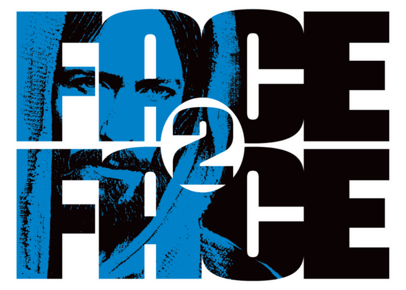
2010
The focus was for youth to be agents of health, happiness, and hope.
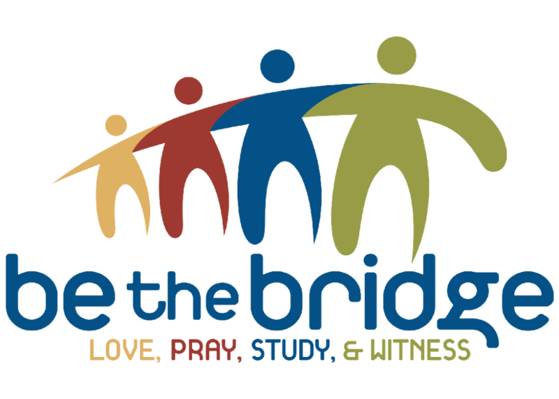
2009
The youth were encouraged to be the bridge connecting God with the New York metro area and those who do not yet believe in Christ.
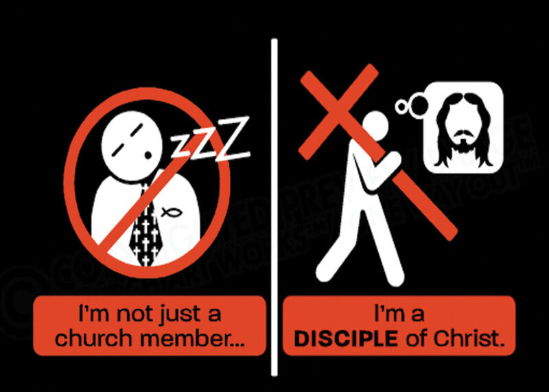
2008
The youth were encouraged to be active in the work of the Great Commission rather than just attending church.
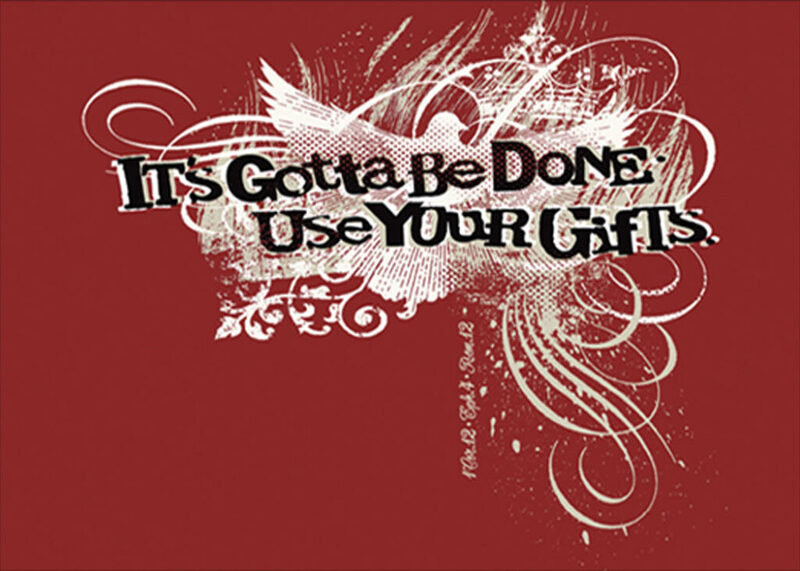
2007
The youth were encouraged to discover their spiritual gifts and those of others to fulfil God’s mission.
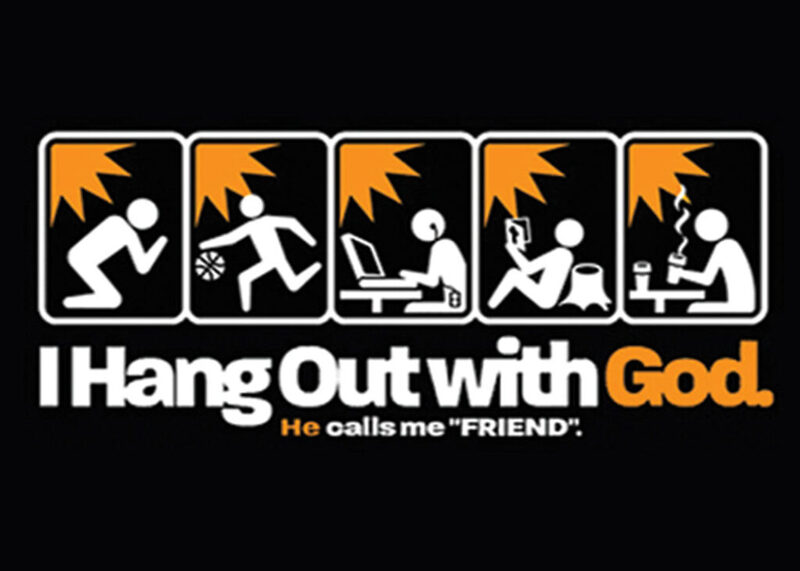
2006
Summary to be written.
2005
Summary to be written.
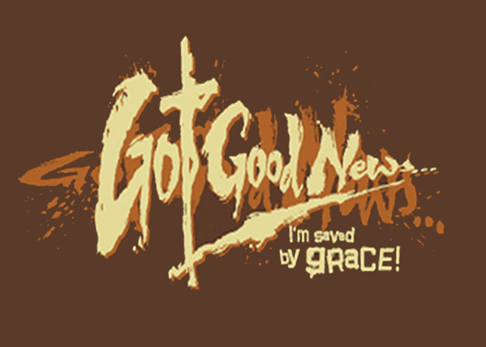
2004
Summary to be written.
Archive
Scans and captions to be provided.
Help us tell it
Former Pathfinders, directors and Master Guides: the youth office would love to scan your photos and record your memories.